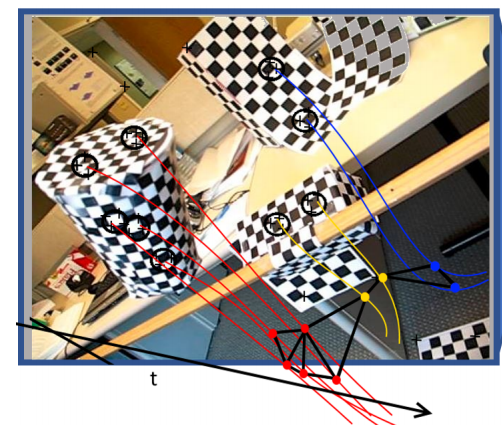

<?xml version="1.0" encoding="UTF-8"?><rss version="2.0"
	xmlns:content="http://purl.org/rss/1.0/modules/content/"
	xmlns:wfw="http://wellformedweb.org/CommentAPI/"
	xmlns:dc="http://purl.org/dc/elements/1.1/"
	xmlns:atom="http://www.w3.org/2005/Atom"
	xmlns:sy="http://purl.org/rss/1.0/modules/syndication/"
	xmlns:slash="http://purl.org/rss/1.0/modules/slash/"
	>

<channel>
	<title>Portfolio</title>
	<atom:link href="./index.html" rel="self" type="application/rss+xml" />
	<link>./../../../index.html</link>
	<description></description>
	<lastBuildDate>Thu, 31 Dec 2020 22:08:33 +0000</lastBuildDate>
	<language>en-US</language>
	<sy:updatePeriod>
	hourly	</sy:updatePeriod>
	<sy:updateFrequency>
	1	</sy:updateFrequency>
	<generator>https://wordpress.org/?v=5.6</generator>

<image>
	<url>./../../../wp-content/uploads/2021/01/tr.png</url>
	<title>Portfolio</title>
	<link>./../../../index.html</link>
	<width>32</width>
	<height>32</height>
</image> 
	<item>
		<title>A single camera based floating virtual keyboard with improved touch detection</title>
		<link>./../../../2020/12/31/a-single-camera-based-floating-virtual-keyboard-with-improved-touch-detection/index.html</link>
					<comments>./../../../2020/12/31/a-single-camera-based-floating-virtual-keyboard-with-improved-touch-detection/index.html#respond</comments>
		
		<dc:creator><![CDATA[root]]></dc:creator>
		<pubDate>Thu, 31 Dec 2020 22:07:59 +0000</pubDate>
				<category><![CDATA[Portfolio]]></category>
		<guid isPermaLink="false">./../../../index.html?p=481</guid>

					<description><![CDATA[Published in: 2012 IEEE 27th Convention of Electrical and Electronics Engineers in Israel Virtual keyboard enables user typing on any surface, including a plain paper or your desk. Some virtual keyboards give vibration feedback; some are projected on the typing surface, while others give different kind of visual feedback such as showing it on a smart&#8230;&#160;<a href="./../../../2020/12/31/a-single-camera-based-floating-virtual-keyboard-with-improved-touch-detection/index.html" class="" rel="bookmark">Read More &#187;<span class="screen-reader-text">A single camera based floating virtual keyboard with improved touch detection</span></a>]]></description>
										<content:encoded><![CDATA[
<h4><strong>Published in: </strong><a href="https://ieeexplore.ieee.org/xpl/conhome/6365376/proceeding">2012 IEEE 27th Convention of Electrical and Electronics Engineers in Israel</a><br></h4>


<p>Virtual keyboard enables user typing on any surface, including a plain paper or your desk. Some virtual keyboards give vibration feedback; some are projected on the typing surface, while others give different kind of visual feedback such as showing it on a smart phone&#8217;s screen. The user “presses” the virtual keys thus typing the desired input text. In this work we have implemented a single standard camera-based virtual keyboard, by improving shadow-based touch detection. The proposed solution is applicable to any surface. The system has been implemented on an Android phone, operates in real time, and gives excellent results.</p>
]]></content:encoded>
					
					<wfw:commentRss>./../../../2020/12/31/a-single-camera-based-floating-virtual-keyboard-with-improved-touch-detection/feed/index.html</wfw:commentRss>
			<slash:comments>0</slash:comments>
		
		
			</item>
		<item>
		<title>Automatic identification of positive or negative language</title>
		<link>./../../../2020/12/31/automatic-identification-of-positive-or-negative-language/index.html</link>
					<comments>./../../../2020/12/31/automatic-identification-of-positive-or-negative-language/index.html#respond</comments>
		
		<dc:creator><![CDATA[root]]></dc:creator>
		<pubDate>Thu, 31 Dec 2020 22:06:33 +0000</pubDate>
				<category><![CDATA[Portfolio]]></category>
		<guid isPermaLink="false">./../../../index.html?p=478</guid>

					<description><![CDATA[Published in:&#160;2012 IEEE 27th Convention of Electrical and Electronics Engineers in Israel Personal coaching, performed by professionals such as psychologists, usually includes training for business as well as social situations such as job interviews, business meetings, interaction with a customer service provider, and more. This requires careful preparation in which, among other traits, the trainees&#8230;&#160;<a href="./../../../2020/12/31/automatic-identification-of-positive-or-negative-language/index.html" class="" rel="bookmark">Read More &#187;<span class="screen-reader-text">Automatic identification of positive or negative language</span></a>]]></description>
										<content:encoded><![CDATA[
<h4><strong>Published in:&nbsp;</strong><a href="https://ieeexplore.ieee.org/xpl/conhome/6365376/proceeding">2012 IEEE 27th Convention of Electrical and Electronics Engineers in Israel</a></h4>


<p>Personal coaching, performed by professionals such as psychologists, usually includes training for business as well as social situations such as job interviews, business meetings, interaction with a customer service provider, and more. This requires careful preparation in which, among other traits, the trainees need to pay attention to the words they choose in the interaction, in order to make a positive impression. To achieve this goal, we have developed a coaching system using speech recognition, which enables both monitoring by the coaching professional and self-training by the user. By providing timely indications as to when the user employs positive or negative expressions as defined by the psychologist, the system helps users develop self-control and awareness regarding the language they use. The system consists of adjusted voice activity detection (VAD) and key word spotting (KWS) algorithms, implemented together with an interactive UI into an Android-based application, available on cellular phones.</p>


<p><a href="https://ieeexplore.ieee.org/abstract/document/6377047">The full paper is available on IEEE</a></p>
]]></content:encoded>
					
					<wfw:commentRss>./../../../2020/12/31/automatic-identification-of-positive-or-negative-language/feed/index.html</wfw:commentRss>
			<slash:comments>0</slash:comments>
		
		
			</item>
		<item>
		<title>Motion Segmentation Using Locally Affine Atom Voting</title>
		<link>./../../../2020/12/31/motion-segmentation-using-locally-affine-atom-voting/index.html</link>
					<comments>./../../../2020/12/31/motion-segmentation-using-locally-affine-atom-voting/index.html#respond</comments>
		
		<dc:creator><![CDATA[root]]></dc:creator>
		<pubDate>Thu, 31 Dec 2020 22:03:44 +0000</pubDate>
				<category><![CDATA[Portfolio]]></category>
		<guid isPermaLink="false">./../../../index.html?p=473</guid>

					<description><![CDATA[We present a novel method for motion segmentation called LAAV (Locally Affine Atom Voting). Our model&#8217;s main novelty is using sets of features to segment motion for all features in the scene. LAAV acts as a pre-processing pipeline stage for features in the image, followed by a fine-tuned version of the state-of-the-art Random Voting (RV)&#8230;&#160;<a href="./../../../2020/12/31/motion-segmentation-using-locally-affine-atom-voting/index.html" class="" rel="bookmark">Read More &#187;<span class="screen-reader-text">Motion Segmentation Using Locally Affine Atom Voting</span></a>]]></description>
										<content:encoded><![CDATA[
<div class="wp-block-image is-style-default"><figure class="aligncenter size-large is-resized"></figure></div>


<p>We present a novel method for motion segmentation called LAAV (Locally Affine Atom Voting). Our model&#8217;s main novelty is using sets of features to segment motion for all features in the scene. LAAV acts as a pre-processing pipeline stage for features in the image, followed by a fine-tuned version of the state-of-the-art Random Voting (RV) method. Unlike standard approaches, LAAV segments motion using feature-set affinities instead of pair-wise affinities between all features; therefore, it significantly simplifies complex scenarios and reduces the computational cost without a loss of accuracy. We describe how the challenges encountered by using previously suggested approaches are addressed using our model. We then compare our algorithm with several state-of-the-art methods. Experiments shows that our approach achieves the most accurate motion segmentation results and, in the presence of measurement noise, achieves comparable results to the other algorithms.</p>


<p><a href="https://arxiv.org/abs/1907.06091">The full paper is available on arxiv</a></p>
]]></content:encoded>
					
					<wfw:commentRss>./../../../2020/12/31/motion-segmentation-using-locally-affine-atom-voting/feed/index.html</wfw:commentRss>
			<slash:comments>0</slash:comments>
		
		
			</item>
	</channel>
</rss>
